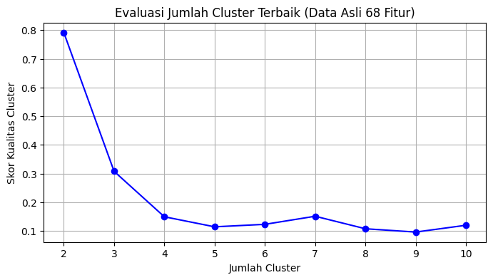
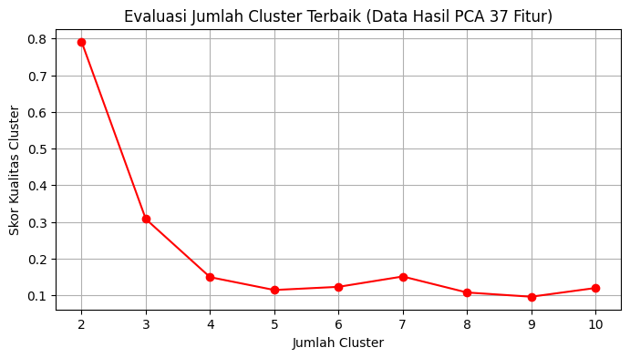
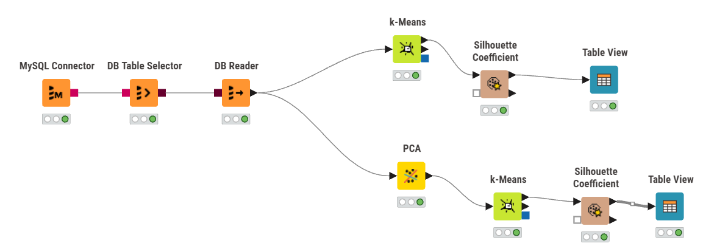
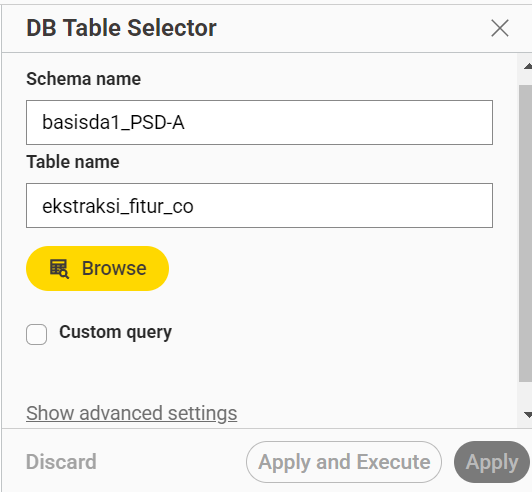
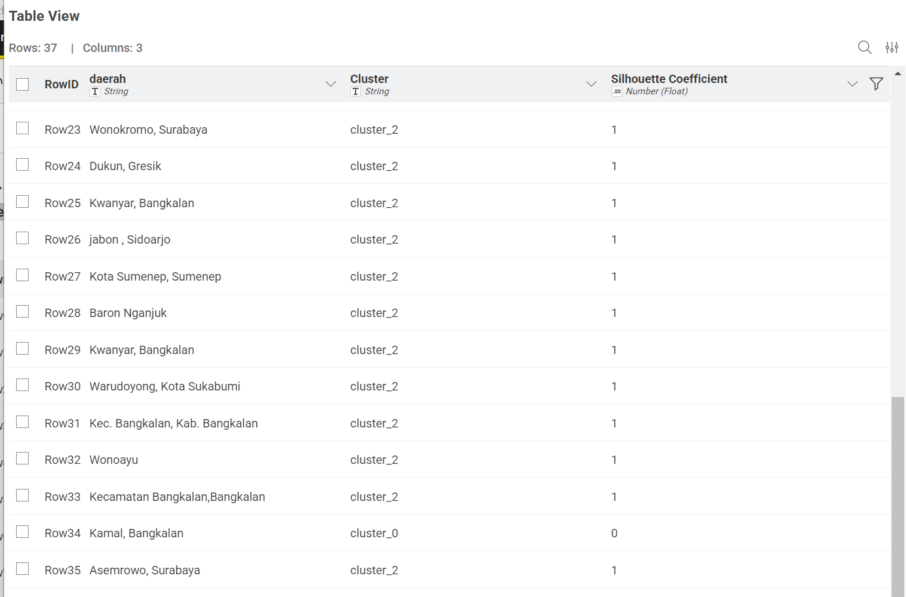
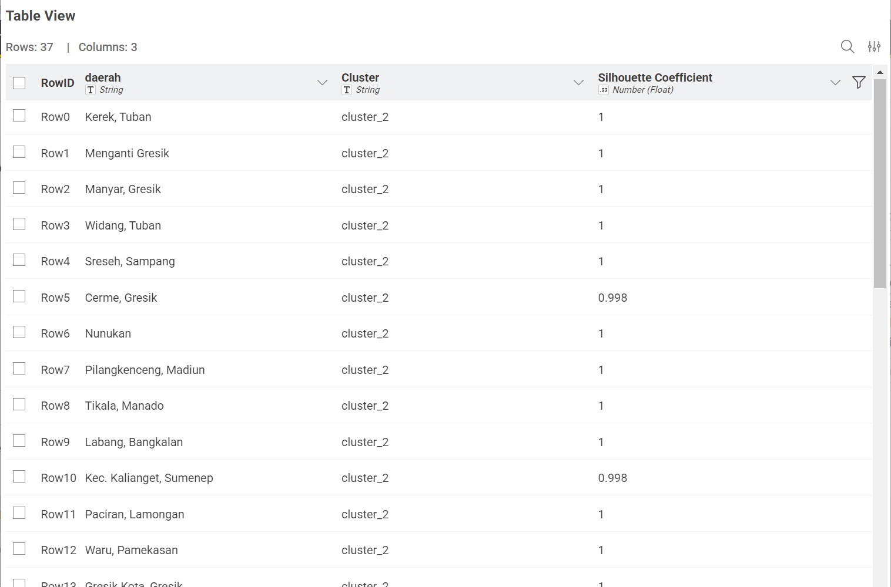

Clustering Data Polutan (68 Fitur vs PCA 37 Fitur)#
Notebook ini bertujuan untuk melakukan K-Means Clustering dan membandingkan hasilnya antara menggunakan data asli (68 fitur) dan data yang sudah direduksi menjadi 37 fitur.
import pandas as pd
import numpy as np
import matplotlib.pyplot as plt
from sklearn.cluster import KMeans
from sklearn.decomposition import PCA
from sklearn.metrics import silhouette_score
from sklearn.preprocessing import StandardScaler
import warnings
warnings.filterwarnings('ignore')
# Memuat Data
df = pd.read_csv('ekstraksi_fitur_co.csv')
print("Dimensi data awal:", df.shape)
df.head()
Dimensi data awal: (37, 71)
| id | nama | daerah | abs_energy | auc | autocorr | average_power | calc_centroid | calc_max | calc_mean | ... | spectral_spread | spectral_variation | spectrogram_mean_coeff | sum_abs_diff | wavelet_abs_mean | wavelet_energy | wavelet_entropy | wavelet_std | wavelet_var | zero_cross | |
|---|---|---|---|---|---|---|---|---|---|---|---|---|---|---|---|---|---|---|---|---|---|
| 0 | 3 | Nurhabibatul Umah | Kerek, Tuban | 0.325552 | 10.822536 | 3 | 0.000892 | 185.172183 | 0.038546 | 0.029654 | ... | 0.130288 | 0.554103 | 0.000015 | 0.704421 | 0.001815 | 0.008006 | 2.144113 | 0.007772 | 0.000069 | 0 |
| 1 | 4 | Verdi Setyawan Ardiansyah Putra | Menganti Gresik | 0.311946 | 10.599365 | 3 | 0.000855 | 183.614501 | 0.036701 | 0.029041 | ... | 0.135135 | 0.592456 | 0.000015 | 0.709078 | 0.001715 | 0.007520 | 2.139121 | 0.007297 | 0.000060 | 0 |
| 2 | 5 | Okan Syailendra wahyudi | Manyar, Gresik | 0.306332 | 10.489406 | 3 | 0.000842 | 180.902553 | 0.036488 | 0.028827 | ... | 0.127778 | 0.661400 | 0.000014 | 0.623414 | 0.001676 | 0.007558 | 2.126252 | 0.007348 | 0.000061 | 0 |
| 3 | 6 | Mochammad Zaenal Abidin | Widang, Tuban | 0.320845 | 10.744960 | 3 | 0.000879 | 184.819043 | 0.037897 | 0.029439 | ... | 0.129537 | 0.474190 | 0.000013 | 0.698436 | 0.001767 | 0.007519 | 2.147071 | 0.007280 | 0.000060 | 0 |
| 4 | 7 | M. Hendrik Purwanto | Sreseh, Sampang | 0.300128 | 10.334234 | 4 | 0.000831 | 178.342624 | 0.038664 | 0.028630 | ... | 0.130322 | 0.684887 | 0.000017 | 0.611650 | 0.001698 | 0.007830 | 2.098579 | 0.007624 | 0.000068 | 0 |
5 rows × 71 columns
# Pemrosesan Data
# Memilih hanya kolom angka untuk dilakukan clustering
X = df.select_dtypes(include=[np.number])
# Menyamakan skala data agar seimbang
scaler = StandardScaler()
X_scaled = scaler.fit_transform(X)
print("Dimensi data setelah disamakan skalanya:", X_scaled.shape)
Dimensi data setelah disamakan skalanya: (37, 69)
1. Menentukan Jumlah Cluster K-Means pada Data Asli (68 Fitur)#
Karena algoritma K-Means membutuhkan input jumlah cluster di awal, kita akan melakukan perulangan untuk mencoba membagi data ke dalam 2 kelompok, 3 kelompok, dan seterusnya hingga 10 kelompok. Dari percobaan tersebut, kita akan menilai “skor kualitas” pengelompokannya untuk menentukan mana jumlah kelompok yang paling baik.
skor_kualitas = []
K = range(2, 11) # Mencoba jumlah cluster dari 2 sampai 10
for k in K:
kmeans = KMeans(n_clusters=k, random_state=42)
kmeans.fit(X_scaled)
# Menghitung seberapa baik data ini di-cluster (kualitas kelompok)
skor = silhouette_score(X_scaled, kmeans.labels_)
skor_kualitas.append(skor)
# Membuat grafik visualisasi kualitas pengelompokan
plt.figure(figsize=(8, 4))
plt.plot(K, skor_kualitas, 'bo-')
plt.xlabel('Jumlah Cluster')
plt.ylabel('Skor Kualitas Cluster')
plt.title('Evaluasi Jumlah Cluster Terbaik (Data Asli 68 Fitur)')
plt.grid(True)
plt.show()
# Menampilkan hasil skor
for k, skor in zip(K, skor_kualitas):
print(f"Jumlah Cluster: {k} -> Skor Kualitas: {skor:.4f}")

Jumlah Cluster: 2 -> Skor Kualitas: 0.7915
Jumlah Cluster: 3 -> Skor Kualitas: 0.3075
Jumlah Cluster: 4 -> Skor Kualitas: 0.1491
Jumlah Cluster: 5 -> Skor Kualitas: 0.1141
Jumlah Cluster: 6 -> Skor Kualitas: 0.1227
Jumlah Cluster: 7 -> Skor Kualitas: 0.1509
Jumlah Cluster: 8 -> Skor Kualitas: 0.1073
Jumlah Cluster: 9 -> Skor Kualitas: 0.0957
Jumlah Cluster: 10 -> Skor Kualitas: 0.1195
2. Reduksi Dimensi dengan PCA (Menjadi 37 Fitur)#
Selanjutnya kita akan memperkecil jumlah fitur dari 68 menjadi 37 fitur agar data lebih padat dan lebih ringan untuk di-cluster.
# Proses memperkecil fitur (reduksi dimensi) menjadi 37
pca = PCA(n_components=37, random_state=42)
X_pca = pca.fit_transform(X_scaled)
print("Dimensi data setelah direduksi menjadi:", X_pca.shape)
Dimensi data setelah direduksi menjadi: (37, 37)
3. Menentukan Jumlah Cluster K-Means pada Data Hasil PCA (37 Fitur)#
Kita lakukan langkah pencarian yang sama persis seperti sebelumnya pada data yang fiturnya sudah dikurangi menjadi 37.
skor_kualitas_pca = []
for k in K:
kmeans_pca = KMeans(n_clusters=k, random_state=42)
kmeans_pca.fit(X_pca)
# Menghitung seberapa baik data ini di-cluster pada hasil PCA
skor = silhouette_score(X_pca, kmeans_pca.labels_)
skor_kualitas_pca.append(skor)
# Membuat grafik visualisasi kualitas pengelompokan
plt.figure(figsize=(8, 4))
plt.plot(K, skor_kualitas_pca, 'ro-')
plt.xlabel('Jumlah Cluster')
plt.ylabel('Skor Kualitas Cluster')
plt.title('Evaluasi Jumlah Cluster Terbaik (Data Hasil PCA 37 Fitur)')
plt.grid(True)
plt.show()
# Menampilkan hasil skor
for k, skor in zip(K, skor_kualitas_pca):
print(f"Jumlah Cluster: {k} -> Skor Kualitas: {skor:.4f}")

Jumlah Cluster: 2 -> Skor Kualitas: 0.7915
Jumlah Cluster: 3 -> Skor Kualitas: 0.3075
Jumlah Cluster: 4 -> Skor Kualitas: 0.1491
Jumlah Cluster: 5 -> Skor Kualitas: 0.1141
Jumlah Cluster: 6 -> Skor Kualitas: 0.1227
Jumlah Cluster: 7 -> Skor Kualitas: 0.1509
Jumlah Cluster: 8 -> Skor Kualitas: 0.1073
Jumlah Cluster: 9 -> Skor Kualitas: 0.0957
Jumlah Cluster: 10 -> Skor Kualitas: 0.1195
Kesimpulan Jawaban#
Menentukan jumlah cluster terbaik pada K-Means:
Lihatlah hasil Skor Kualitas Cluster (baik dari data asli maupun data 37 fitur). Jumlah cluster (kelompok) yang menghasilkan skor tertinggi adalah jumlah cluster yang paling optimal/terbaik untuk dipilih.
Berapa baiknya data ini di-cluster:
Kualitas atau tingkat kebaikan hasil cluster ditunjukkan oleh Skor Kualitas itu sendiri.
Semakin besar nilainya (maksimal 1.0), berarti data berhasil dipisahkan dan dikelompokkan dengan sangat baik.
Semakin kecil nilainya (mendekati 0), berarti hasil pengelompokan kurang bagus karena banyak data yang mirip/bertumpuk sehingga sulit dipisahkan.
Perbandingan (68 Fitur Asli vs 37 Fitur PCA):
Untuk mengetahui mana yang lebih baik antara data asli (68) dan data reduksi (37), Anda cukup membandingkan skor tertingginya.
Jika nilai Skor Kualitas pada pengujian PCA (37 fitur) lebih besar daripada data asli, berarti proses pengurangan dimensi (PCA) telah berhasil membuang informasi yang tidak penting dan membuat pengelompokan K-Means menjadi lebih baik.
Analisis K-Means Menggunakan KNIME#
Selain menggunakan Python, proses clustering ini juga divisualisasikan dan diuji menggunakan KNIME Analytics Platform dengan alur (workflow) membagi dua jalur (Jalur Asli dan Jalur PCA).
1. Struktur Workflow KNIME


Jalur Atas (Tanpa PCA): Data mentah dibaca lalu langsung diproses menggunakan node
k-Meansuntuk dikelompokkan berdasarkan keseluruhan 68 fitur. Kualitas pengelompokan ini kemudian diukur menggunakan nodeSilhouette Coefficientdan dapat dilihat hasil baris per barisnya padaTable View.Jalur Bawah (Dengan PCA): Data mentah terlebih dahulu masuk ke node
PCAuntuk direduksi dimensinya menjadi 37 fitur utama. Setelah fitur mengecil, data baru dimasukkan ke nodek-Meanslalu dievaluasi skor Silhouette-nya padaTable Viewyang kedua.
2. Pembahasan Hasil Clustering (Berdasarkan Tabel Visualisasi KNIME)
Berdasarkan tangkapan layar Table View yang dieksekusi, kita dapat menarik kesimpulan berikut:

Tabel Pertama (Jalur Atas - Data Asli 68 Fitur): Terlihat bahwa hampir seluruh baris data (seperti daerah Wonokromo, Dukun, Kwanyar, dsb.) mendapatkan Silhouette Coefficient bernilai 1.0 (sempurna). Nilai 1.0 berarti titik data daerah tersebut sangat padat dan berada tepat di tengah-tengah clusternya sendiri, terpisah jauh dari cluster lain. Terdapat pengecualian kecil pada beberapa data (misal Kamal, Bangkalan di
cluster_0) yang mendapat skor 0.0, artinya titik daerah tersebut berada tepat di ambang batas antara dua cluster yang saling bersinggungan.

Tabel Kedua (Jalur Bawah - Data Hasil PCA 37 Fitur): Pada jalur hasil reduksi PCA, kualitas clustering terbukti sangat stabil dan mempertahankan struktur dari data asli. Mayoritas daerah tetap mencetak skor 1.0. Ada sedikit penyesuaian skor pada daerah tertentu (seperti Cerme Gresik dan Kec. Kalianget Sumenep yang skornya menjadi 0.998).
Kesimpulan Keseluruhan: Hasil visualisasi KNIME membuktikan bahwa membuang 31 fitur dan menyisakan 37 fitur PCA tidak merusak kualitas data. Kelompok (cluster) yang dihasilkan tetap sangat kuat dan akurat (skor mayoritas mendekati 1.0). Ini menunjukkan PCA sangat efektif dalam meringankan beban program komputer sembari mempertahankan inti informasi dari data polutan tersebut.